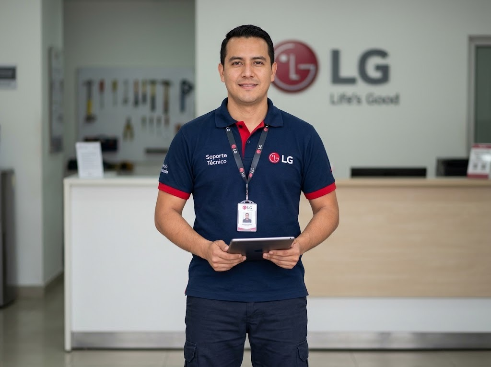

Reparación a domicilio de lavadoras LG en Panamá
Vamos a tu casa o apartamento, revisamos tu equipo LG, te explicamos la falla y te damos el costo antes de reparar.
Reparación a domicilio de lavadoras LG: qué incluye
- Revisión del equipo en tu casa
- Explicación clara de la falla
- Costo confirmado antes de reparar
- Reparación en la misma visita cuando hay repuesto
- Garantía sobre pieza y mano de obra

Qué revisamos en la lavadora LG
Bomba de desagüe, válvula de entrada de agua, seguro de la puerta, amortiguadores, rodamientos, tarjeta de control, sensor de nivel y mangueras.
Fallas relacionadas
- No centrifuga o centrifuga con mucho ruido
- No desagua (queda agua en la tina)
- No llena de agua o llena muy lento
- Gotea o se sale el agua
- La puerta no abre o no cierra
Más información
Preguntas frecuentes
¿Qué incluye el servicio de reparación a domicilio de la lavadora LG?
Revisión del equipo en tu casa; Explicación clara de la falla; Costo confirmado antes de reparar.
¿Dónde lo hacen?
En tu casa, apartamento u oficina en Ciudad de Panamá, San Miguelito y Panamá Oeste.
¿Cuánto cuesta?
Te confirmamos el costo por WhatsApp antes de agendar, según el equipo y el servicio.
¿Necesitas servicio técnico LG en Panamá?
Escríbenos por WhatsApp con el equipo, el modelo y la falla. Te confirmamos disponibilidad para tu zona en minutos.